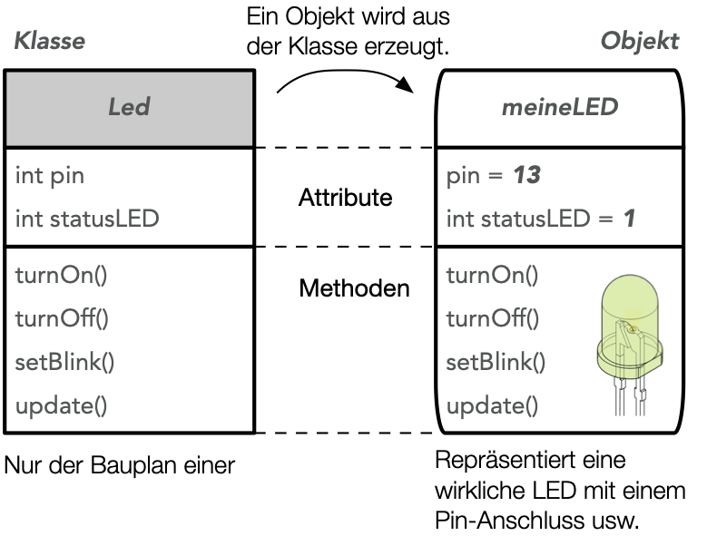

Mit Objektorientierung zum Multitasking
Objektorientierte Programmierung
Klassen und Objekte stellen eine Weiterentwicklung des Konzeptes von Variablen und Funktionen dar. Während eine Variable nur einen Wert (oder als Array auch mehrere Werte) besitzen kann, so kann ein Objekt zusätzlich auch Methoden besitzen. Dies ermöglicht es, einen gut lesbaren und flexibel einsetzbaren Code zu schreiben. Stehen bei Variablen vordefinierten Variablentypen (int, float, char, ...) zur Verfügung, so ist es bei Objekten notwendig den Objekttyp selbst als eine Art Bauplan für das Objekt zu programmieren.
Bei objektorientierter Programmierung spricht man anstatt von einem Objekttyp von einer Klasse.

Beispiel einer LED-Klasse
#define LED_PIN 13
class Led {
// Attribute (Eigenschaften) der Klasse
int pin; // LED-Pin
int statusLED; // Status der LED (1,0)
// alle Methoden (oder Attribute) nach public: sind öffentlich
public:
Led(int pinLED) { // Konstruktor (ohne void oder int, etc.)
pin = pinLED;
pinMode(pin, OUTPUT);
}
void schalteLedAn() {
statusLED = HIGH;
digitalWrite(pin, statusLED);
}
void schalteLedAus() {
statusLED = LOW;
digitalWrite(pin, statusLED);
}
}; // Eine Klasse endet mit einem Semikolon
Led meineLED(LED_PIN); // LED Objekt wird initialisiert
void setup() {
// bleibt leer :-)
}
void loop() {
meineLED.schalteLedAn(); // Methodenaufruf vom Objekt meineLED
delay(500);
meineLED.schalteLedAus();
delay(500);
}
Erläuterungen zum Beispiel
class Led { ... }
Das Schlüsselwort class gibt an, dass eine Beschreibung für die Klasse Led folgt. Der gesamte Code für die Klasse steht in { } Klammern und endet mit einem Semikolon ; hinter der letzten } Klammer.
public:
Alle nach dem Schlüsselwort public: folgenden Attribute (Variablen) und Methoden sind auch von außerhalb des später erzeugten Objektes zugänglich (z.B. meineLED.turnOn()). Es sollte vermieden werden, einfache Attribute (Variablen) public zu setzen.
Led(int pinLED) { ... } (Konstruktor)
Der Konstruktor ist eine spezielle Methode, welche einmalig beim Erzeugen eines Objektes (z.B. Led meineLED(LED_PIN)) aufgerufen wird. Durch den Konstruktor werden den Attributen (Variablen) der Klasse Werte zugewiesen. In unserem Beispiel wird der Wert des LED-Pins übergeben.
meineLED.turnOn()
Zum Aufrufen einer Methode des erzeugten Objektes, wird der Methodenname durch einen Punkt . mit dem Objektnamen verknüpft.